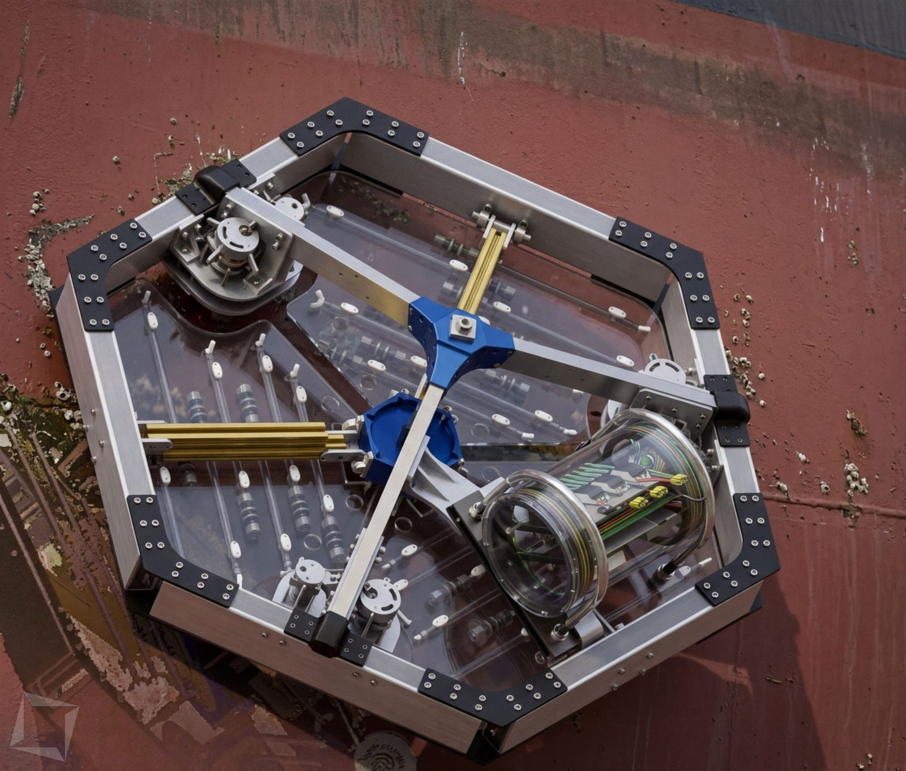
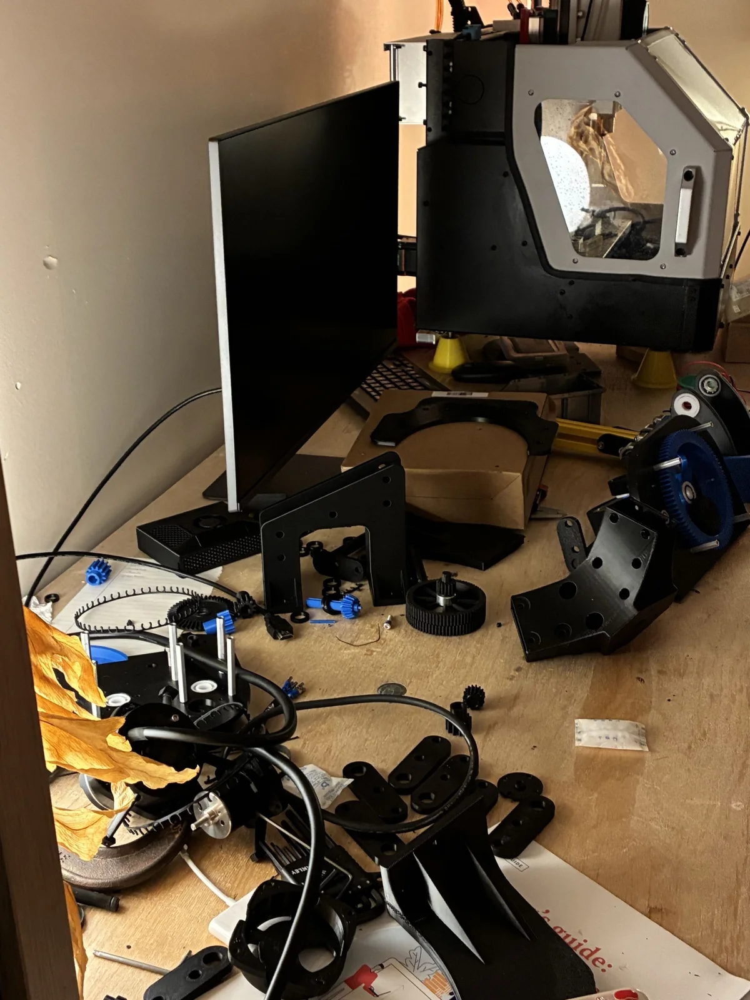
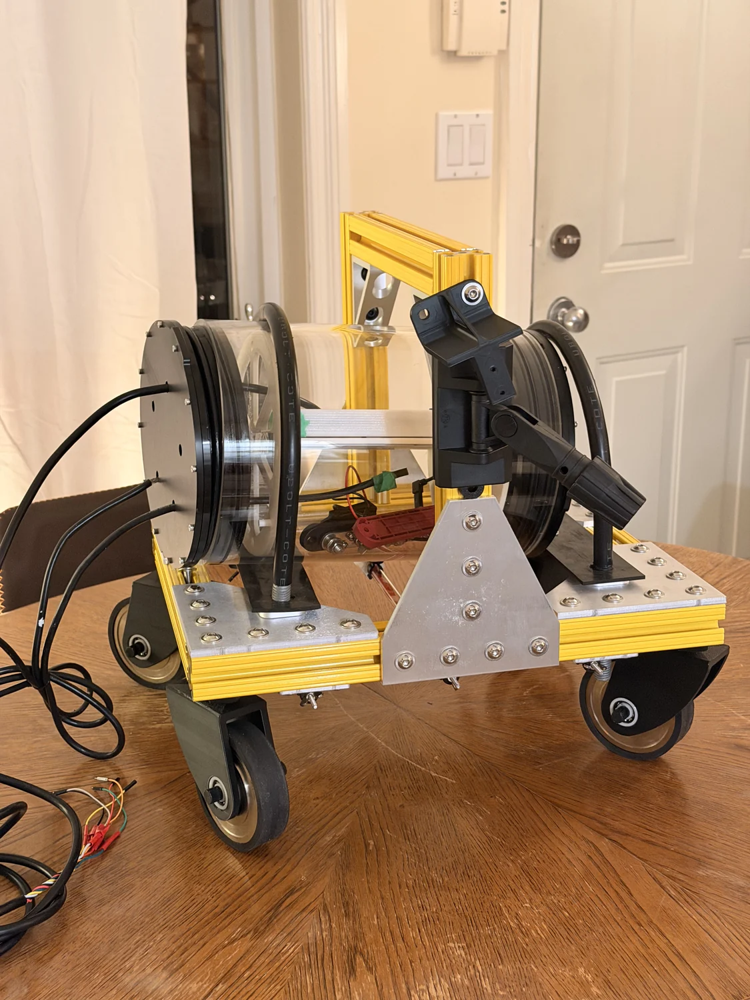
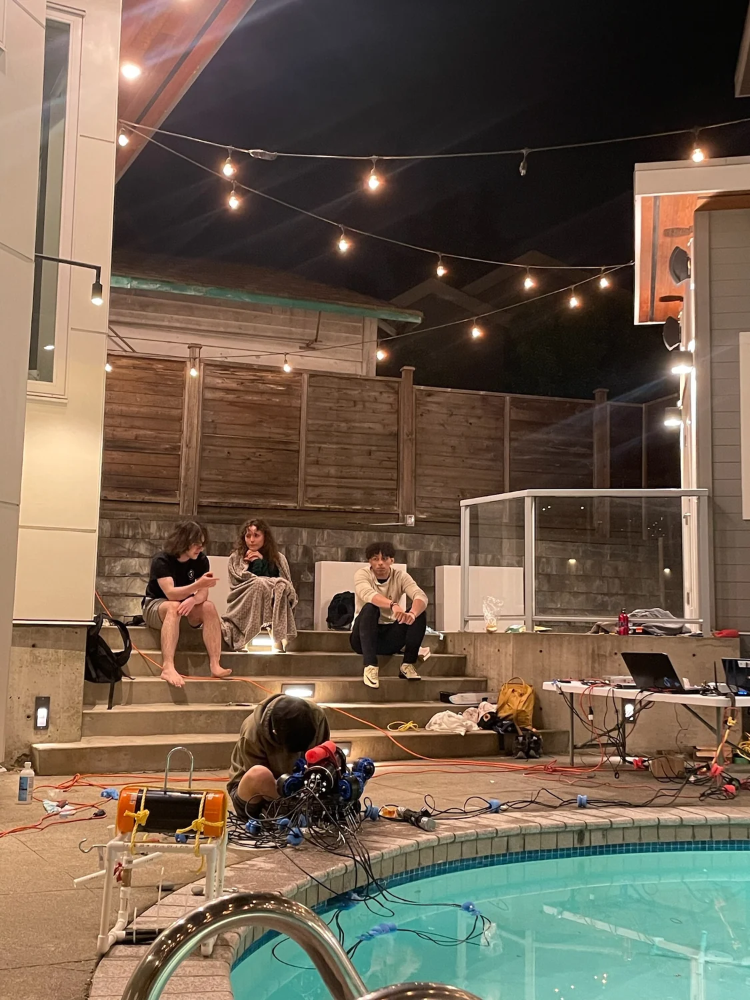

Assembly sequence
Hands-on assembly and connection work before the shoreline trial.
Technology overview
ZIMA pairs underwater swerve-drive mobility with close-range UV-C treatment, operating on a prevention-first cadence: short, repeatable passes that stop early-stage growth before it becomes established fouling.
Build and test media
Hands-on assembly and connection work before the shoreline trial.
Assembly, treatment hardware, and electrical integration on the rebuilt prototype.
Close surface and underwater views during a supervised shoreline trial.
The ZIMA architecture
Select a marker on the render to see what each part of the platform is responsible for.

Independently steered swerve-drive units that give the rover traction, fine maneuvering, and tight position control on curved steel.
The three clear plates carrying UV-C tubes are designed for close-range, repeatable treatment passes.
Houses the electronics that keep the system operating reliably in a subsea environment.
The structural platform that carries the mobility, treatment, and electronics hardware through each pass.
Render of the current ZIMA design on a hull section. Markers describe the role of each area at a high level.
Interactive demo
Growth keeps appearing on the plate below. Drive the rover yourself, or switch to auto passes to see how short, repeatable maintenance cycles keep a hull close to its clean baseline.
Illustrative interaction to show the prevention-first idea. Not a simulation of real system performance.
Industry Issues ZIMA Addresses
Three industry problems make prevention-first hull maintenance matter.
Operators have long relied on coatings and reactive cleaning to manage fouling. A prevention-first system creates a path to reduce how much the hull depends on harsher intervention.
ZIMA is designed to support cleaner hull upkeep before the pressure for aggressive intervention builds.
Even thin fouling layers raise drag. Keeping the hull cleaner more consistently can lower the fuel penalty that builds between major cleaning events.
The system is built around preventing the drag penalty that operators end up paying for later.
Biofouling is a transport pathway. Preventing organisms from establishing on the hull can help reduce transfer risk between ports.
A prevention-first maintenance rhythm can help protect not just vessels, but the waters they move through.
Figures: microplastics from coatings, IUCN (Boucher & Friot, 2017); emissions, IMO GloFouling Partnerships; invasive-species transfer via biofouling, IPBES and GloFouling Partnerships.
Development story
Our early proof-of-concept hardware and hands-on underwater robotics work shaped the team’s approach to subsea design. Today, we’re developing ZIMA’s custom swerve drive, UV-C treatment hardware, electronics, and controls together, moving from CAD to machining and assembly. Working on the complete rover helps us see how the parts fit together and what to refine in the next build.



Next milestone
If you are evaluating pilots, validation support, or technical collaboration, this is the right stage to talk.